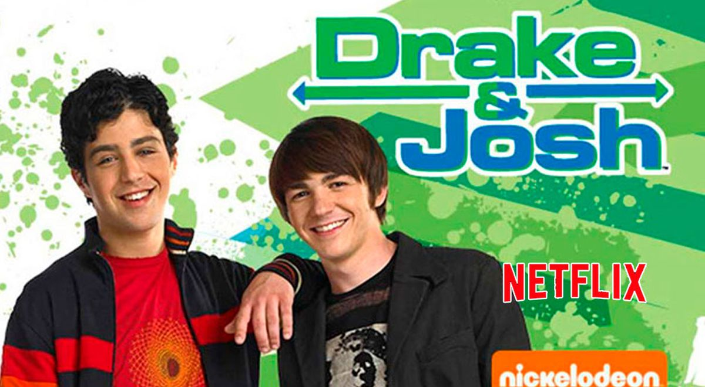

Drake y Josh
Es una serie de comedia adolescente creada por Dan Schneider, y un spin-off
de El Show de Amanda producida y transmitida por la cadena Nickelodeon.
Protagonizada por Drake Bell y Josh Peck, antagonizada por Miranda Cosgrove y coprotagonizada por Nancy Sullivan y Jonathan Goldstein. Drake & Josh está basado en una escena de El Show de Amanda, en el que Josh Peck y Drake Bell pelean por un camarón, esa escena se puede ver al final de la película "Un Camarón Gigante" ya que esta fue la escena que le dio la vida al programa.
Después de la cancelación de la serie, se pueden ver varias referencias al show, y en ocasiones, cameos o elementos ya antes vistos en las series Zoey 101, iCarly, Victorious, Sam & Cat y Henry Danger. De lo que se sabe es que la serie fue cancelada ya que Nickelodeon decidió producir más series que "sorprenderían" a la audiencia.
|

|